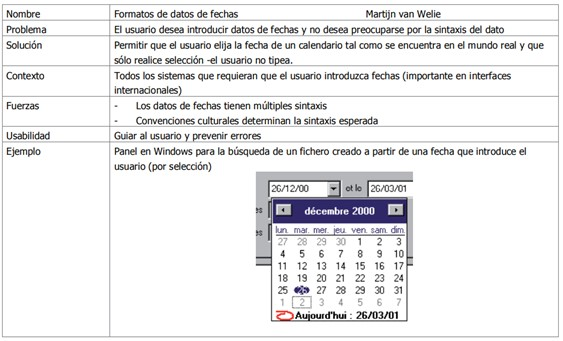

Interacción Humano Ordenador
La interacción humano computador supone un reto importante actualmente en el desarrollo de software ya que cada día estos deben ser más usables, intuitivos e interactivos, abarcando múltiples disciplinas, donde participan especialistas de creación de aplicaciones, diseñadores gráficos, psicólogos, usuarios y entre otros.
La IHC es un área en permanente evolución dados los cambios tecnológicos que se suceden continuamente. Las expectativas de desarrollo en los próximos años son tales que los grandes avances que se darán en la computación se centrarán en resolver los problemas de la interacción entre el humano y el computador. (Acosta & Zambrano, 2006)
Figura 1
Un ejemplo de un patrón de Interacción denominado "Formato de datos de fechas"

Tomada de Acosta, A., & Zambrano, N. (2006). Importancia, problemas y soluciones en el diseño de la interfaz de usuario.